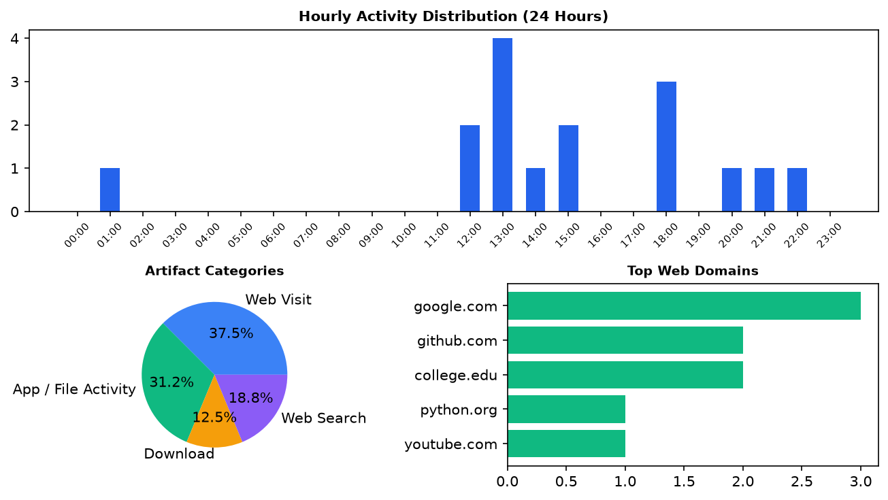

sort(key=lambda x: x['dt'])
| Test Scenario | Performance | Status |
|---|---|---|
| Live Extraction | 90+ items in 0.45s | 100% Passed |
| Active DB Lock | Bypassed via %TEMP% | Zero Crashes |
| Reporting | Styled HTML & CSV | Generated |
places.sqlite), automated late-night anomaly detection, and single-file binary packaging with PyInstaller.